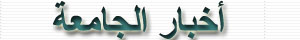

���םב 2006 *
§
�����ב
�.�. ד�ד� ����וםד ��� �ב���� ��ם� �ב��ד�� ��ם� �זב� �ב����� �ב�זם��ל ��ב��ו��
��דה� �ב�ם��� ב����� ד� �בד��זבםה ��ב��ד�� ז�זב�� ��� �ב�בו� ד�‗� ��בםד �בב��
�ב�בד�הם� � ה��� �בדב��ל �ב�בד�הם �ב���ל ז��� �ב‗בם�� ז�בד���� �ב�ם��ם� ז�ב���ם�
‗ד� ��דה �ב��ה�ד� ד����� בב��ם� �ה ��ל �ב����� �םה ד�� ז�זם��� � ז������ ד��� �ה
�ב����� ז�ב�ם�� �ב�זם��ם� .
-
‗ד� �����ב �ם���ו �ב��ז��ם� םז�ל ���ם�ז� ��ם� ��ד�� �ם��ם�ז��‗ �ב�ז�ם� �ם� �ד
�ז�ם� �����ם� �םה �ב��ה�םה בד�� �ד� �הז��. ���דה �ב�����ם� �בל �ב���זה �ב����ל
ז�ב�בדל � ����ב �בז�ז� ז�בד��ז��� �ב�בדם� �םה �ב��ד��םה.
§
ה�ד� ‗בם�
�ב���ם� ��בז��ל �ב��ם� �בד��ד� �ב�זבל �ב�זב �ה �ב��בםד ז�ב�הדם� �ל �בד��ד���
�ב��ם��. ���ו�� �בד��ד� ��‗ם� �ז� �ב��בםד ז�ב��ד��� �ל �ב�הדם� ז�ה��
�בד��ד��� �ב��ם�� ז�ב���� �בל ז���
�ב��בםד �םו� זה��� �בד��ד� ��� ד��ז� ��ה�זב דז�ז���ו� �ב���ם���� �ב��בםדם� �ל
�בד��ד��� �ב��ם�� � �ז� �ב�בד �ל �הדם�ו�� ��ב����� �בל דה���� �ב����� �ב���זם�
בבד��ב��� �ב�הדזם� � �ב��בםד �בדז�ו ה�ז �ב�הדם� ז�ב��בםד �ה ��� ז�בד��ד���
�ב��ם�� .
§
ה�ד�
‗בם� �ב��ז� �בד��ד� �ב�הזל ��הז�ה �ב�זבד� ז�ב��הזה �ו�� �ב���ם� ��‗�� �ב�זבד�
ז����� �����ו� �ב��הזהם� ז�ב������ם� בב������� דה �ם���ם�ו� ז�ב��� �ה �בם�� בב��
דה �ב�ם�ו� ד� �ב��‗ם� �בל �ב�זב �בה�דם� ז�����ו� �בד�בם� ז����ו� �ב����ל
ז�ב�םהל� ה��� �בד��ד� �ב��ם� דה �ב����� �ל דז�ז� �בד��ד�.
-
‗ד� ה�ד �בד�ב� �ב�זדל ב��ז� �ב�ה��ה ��ב�����‗ ד� ד�‗� ������ ז��ז� �ב�ה��ה
��ב‗בם� ז�ה�ז� �ב�דד �בד���� בב�‗�ה ד��ד� "�דבם� ����� �ב���� ז�ב���ו� ���ז�
�ב�ה��ה". ��דה� �ב��� �בד��ד� ��� ד��ז� �זב ����� �ב���� ז��ז� �ב�ה��ה � ד�וזד
��ז� �ב�ה��ה ז�ב���ו ��ב��� �ב�ה���ם�� �ב�� �ל �ב�דה ז��ב��ם�� �ב���� �ל �ב���זה
ד� �בדז��ה� ז��ם�� �ב���� �ב�םהל ז��ז� �ב�ה��ה.
§
ה�ד�
‗בם� �ב�� �ב��ם� דה �בד��ד��� �ל ד��ב� ������ �ב�בדם� :
_
��� ה�ד� �ב‗בם� �בד��ד� �ב�בדל �ב�הזל �ב���� ז�ב���זה ��הז�ה " �ב��בםד �ב��ל �ל
�ב�ב�ם� �ב��ב�� : �בד��‗ב ז�ב�בזב " ���� �ב�בו �בד���‗זה �בל ד��‗ב �ב�ב�� דה
�בה��ם� �ב���ם�ם� ז����� ��� �ב���םב זה���ז� ד��‗ב �ב��� �ב��ל ז�ד‗�הם� ז�� �בם�
בב���ד�� ז�ב�ז�� ��ב‗בם� ז��זם� ���ד� �ב��בםד �ב��ל ז�ב������ ��ב�דבם�
�ב��בםדם�.‗ד� ה��� �בד��ד� 62 ����נ �בדם�נ �ב�ב 7 �ב��� �בדם� �בל ד��� �ב���
�ם�ד �ל ד��ב� �ב������ �ב��ם� .
-
ה�ד ��ד �ב����ב �בד��ד� �ב�בדל �ב�הזל �ב���� בב��ד �ו�� �בז�ז� �בל ���� ד� ז�ב
�בםו �ב�בד דה ��הם�� �ב���ם� ז��� �ב�ב�� ב�ד��� �ב����ב זדה���� ��זם� �ב��בםד
�ב��ל � ז�הדם� �ב�ו�ד�ד ��ב����ב �ל �ב��ם� � ��� ‗���� ����� �ב����ב � ז���ם�
�ב����ב .
_
ה��ד ��ד ����� �ב���ד ��ב�����‗ ד� �ב�ד�ם� �בד��ם� ב����� �ב���ד ב����נ
�‗בםהם‗ם� �ה �ב��ם� �ל �ד��� ז����� �ב���ד ז�ב‗ ז��דה ���� �ב��� �בדם� �ד �ב�בו�
������� 26 ��ב� �‗בםהם‗ם� .
_ ה�ד ��ד
�ב�ד��� �ב���ה� ד��ד�ו �ב�הזל �ב���� ז�ב�ל םה��� דז�ז��� ��ם�� ���ב� ��ד��� �ב�ד
ז�ב��ז��� �ב��ם�� �ל ו�� �ב����.
§
ה�ד�
‗בם� �ב�ם�ב�
ד��ד�ו� �ב��ד� בב�בזד �ב�ם�בם� �ב�ל ה��� ��� דז�ז���
�ו�ד�
��ב������
�בד�הם� ��ז��� בב��זם� ז�ז�
�ב�ם�ב�ל
�דה �ב��ם� �ב��ל �בד��ב� ��ב����� �בל
���ם� �ב����� �ב�ז��ם� �בל �ב������ ז���� �ב�ז�� דה �בה��ם� �ב‗םדם��ם�
ז�ב�ם�ם��ם� �ד���‗�
ה��� דה ������ �ב�בזד �ב�ם�בם� ��ב��ד��� �בד��ם�
ז�ב���ם�
ז�ב��ה�ם� �
��‗�� �ב�ז�� �בד��ם� זד��‗� �ב��ז�
�בד��ב�� .